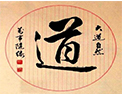

道家哲学道家是中国春秋战国诸子百家中最重要的思想学派之一,道家思想的起源很早,传说中,轩辕黄帝就有天人合一的思想。一般来说,公认第一个确立道家学说的是春秋时期的老子,道家是中国春秋时期战国时期诸子百家中最重要的思想学派之一。
西汉初年,唐朝初年、汉文帝、汉景帝、唐太宗、唐玄宗以道家思想治国,使人民从前朝苛政之后得以休养生息。历史称之为文景之治、贞观之治、开元盛世。
后来汉朝的董仲舒提出了「罢黜百家、独尊儒术」,再遵从道家思想的政策。并被后世帝王采纳。虽然道家并未被官方采纳,但继续在推动中国古代思想的发展中扮演着重要角色。魏晋玄学,宋明理学都揉合了道家思想发展而成。唐朝与元朝初年道教更是被定为国教。道家倡导自然的世界观和方法论,尊黄帝、老子为创始人,并称黄老。